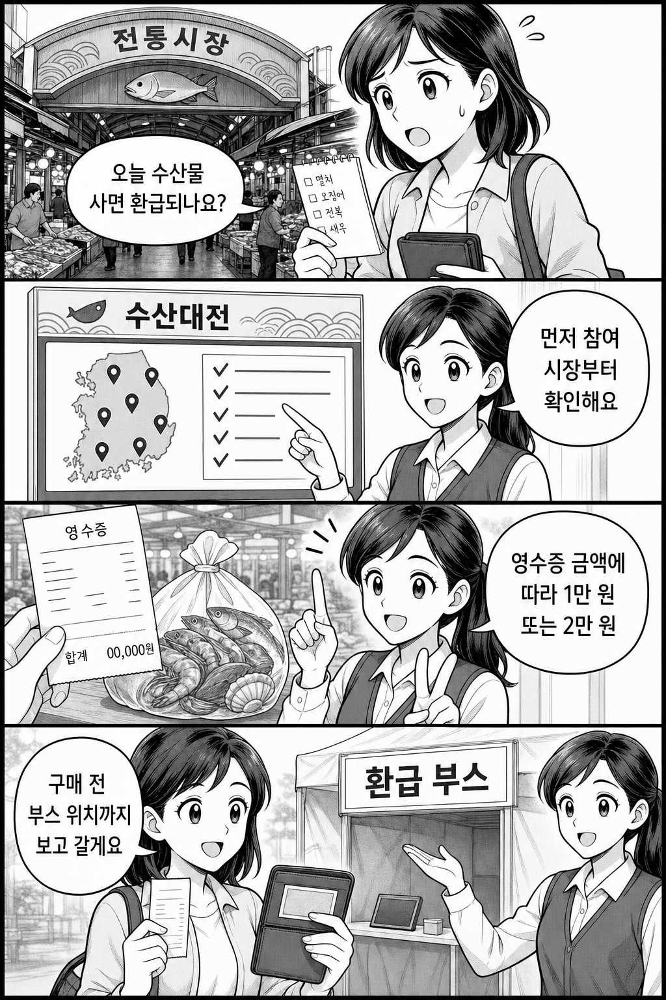

결론부터 말하면, 6월 수산대전 온누리상품권 환급은 “수산물을 사면 무조건 환급”이 아닙니다. 먼저 참여 시장·참여 점포인지 보고, 당일 영수증 금액과 환급 부스 운영 여부까지 확인한 뒤 장을 보는 편이 안전합니다.
공식 수산대전 페이지 기준 6월 온누리상품권 환급행사는 6.10(수)~6.14(일)로 안내되어 있습니다. 지자체별 참여 시장과 세부 운영시간은 다를 수 있으니, 아래 순서로 확인하세요.

구매 전에는 참여 시장, 영수증 금액, 환급 부스 위치를 먼저 확인하세요.
먼저 봐야 할 것들
기간: 공식 수산대전 6월 환급행사 안내는 6.10~6.14입니다.
대상: 국내산 수산물 구매가 핵심입니다. 모든 품목·모든 점포가 자동 대상이라고 보면 안 됩니다.
금액 기준: 수원시 보도자료 기준 구매 금액 3만 4000원 이상은 1만 원, 6만 7000원 이상은 2만 원 환급으로 안내됐습니다.
한도: 1인 최대 환급액은 2만 원으로 안내됐습니다.
현장 확인: 참여 점포와 환급 부스 위치, 운영시간을 장보기 전에 확인해야 합니다.
왜 시장부터 확인해야 하나요?
이 행사는 전국 모든 수산물 구매에 자동 적용되는 쿠폰이 아닙니다. 공식 수산대전의 환급행사 페이지가 있고, 각 시장·지자체가 참여 점포와 운영 방식을 따로 안내합니다. 같은 수산물이라도 참여 점포가 아니거나, 영수증 조건이 맞지 않거나, 부스 운영시간을 놓치면 환급을 받기 어렵습니다.
장보기 전 3단계 체크
공식 수산대전 온누리상품권 환급행사 페이지에서 행사 기간을 확인합니다.
내가 가려는 시장의 공지에서 참여 점포와 품목을 확인합니다.
구매 후 바로 환급할 수 있도록 영수증, 본인 확인 절차, 환급 부스 위치와 운영시간을 확인합니다.
헷갈리기 쉬운 지점
“최대 2만 원”은 누구나 2만 원을 받는다는 뜻이 아닙니다. 구매 금액 기준을 넘겨야 합니다.
수원시 자료는 수원시농수산물도매시장 수산동 사례입니다. 다른 시장은 참여 여부와 세부 운영이 다를 수 있습니다.
행사 기간 마지막 날에는 부스 대기나 예산 소진 안내가 있을 수 있으니, 현장 공지를 함께 보세요.
정리하면, 이번 글의 핵심은 간단합니다. 먼저 참여 시장을 확인하고, 구매 금액 기준을 맞춘 뒤, 당일 환급 부스까지 들를 수 있을 때 혜택을 놓칠 가능성이 줄어듭니다.